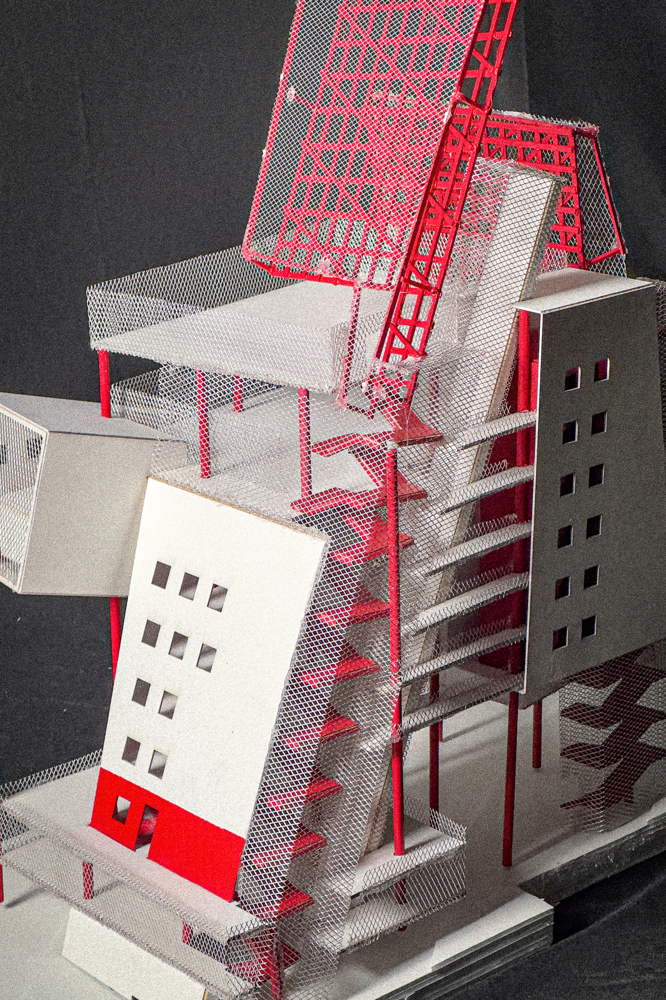

aw_2404_ced
A Tower of Babel
University of California, Berkeley, College of Environmental Design
Special Thanks to: Adam Miller (instructor)
The “Social Condenser” is an architectural typology developed in the Soviet Union of the early 1900s. Central to the typology is the ideal of the architecture and architect’s power and responsibility in shaping social behavior. Social condensers aim to challenge contemporary social hierarchies through the collision and condensation of daily activities, which creates forced interactions between people who would otherwise have no interaction at all, and therefore creating a greater communal consciousness.
Ultimately with the proof of time, social condenser projects were not entirely successful in all their goals. The complex nature of individuals and communities makes it so that technocratic housing projects like the Smithson couple’s “Robin Hood Garden” are usually unsuccessful in creating a cohesive community.
A Tower of Babel is a modern take on the social condenser project. Located near UC Berkeley’s campus, it is a building that combines a basketball court, two pickleball courts, several classrooms, art studios, and offices into one building. Like many places across the United States, Berkeley could do well with a welcoming third space that fosters a better established city-community.
The experiment is not conducted the same way of a-hundred-years-ago just to yield the same unsatisfying results, but rather with a touch of cynical performatism. The name “A Tower of Babel” is an obvious allusion to the biblical story “Tower of Babel.” In the same vein to that story, challenge against the social norm fails, because the predetermined “norm” causes people to organize ineffectively. However, the immediate functions of a social condenser is still desirable, people always need a space to gather, to exercise and compete, to learn and meditate. A Tower of Babel takes this important behavioral base, and performs it. With maximum exposure, the building performs its interior spaces to external viewers. From a distance, it is impossible for viewers to tell if all people within this building are organizing effectively. The performative exposure of A Tower of Babel creates images of one indisputable fact, that people of different social groups are existing near each other. People, are together.
A subversive idea to a conservative society must be articulated unabashedly and repeatedly, until it becomes hegemonic, just as how conservative ideas of any current time period are hegemonic through their daily reinforcement, their control of the mainstream. No “natural ideas” are natural and self-evident! Social condensers, individually, are failures, but repeatedly, it becomes a tradition of typology. The biblical Babel was a failure, but to recreate a Babel today, is a continuation of a past-initiated challenge against the norm. It is to perform a “coherent community” once again, and to sow seeds for actual change.
